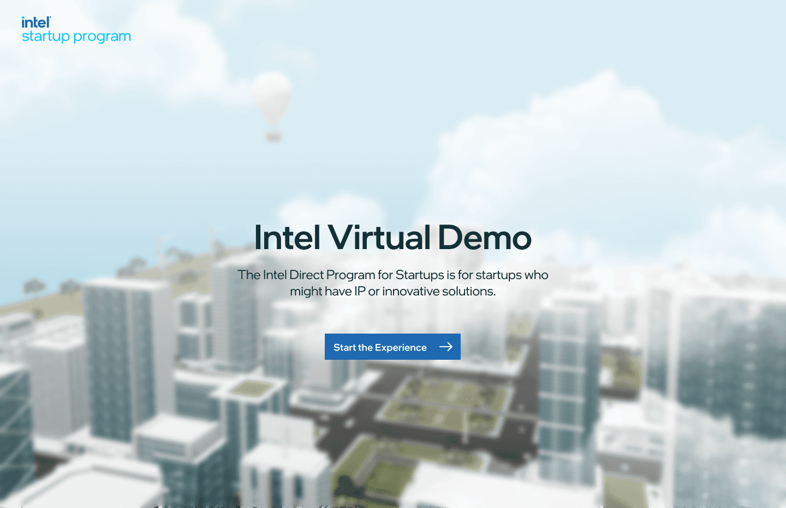

Designing Intel's virtual demo
Intel's startup program backed more than 40 deep-tech companies making robots, sensors, inspection rigs and server hardware. None of it fits in a pitch deck. At XR Labs we built the Intel Virtual Demo Zone: a 3D city in the browser where every startup's product runs inside the building it was made for.

Forty products you had to see to believe, and no room to show them in.
The Intel Startup Program is a launchpad for deep-tech companies. When we started, its portfolio held more than 40 of them: an AI camera that inspects bottles on a production line, a robotic arm that sorts parcels, a sensor that watches a hospital bed, a tag system that tracks servers in a rack.
Each one is hard to explain in words. A buyer has to see it working in their own setting before it clicks. And in 2021 almost every one of those meetings was a video call, so the startups were stuck with slides and product videos.
Intel wanted three things from the program: more visibility for the startups, better conversations with the people who found them, and stronger fundraising. All three came down to the same gap.
An investor or plant manager couldn't stand next to a startup's product, so they never saw the moment it solved their problem. The portfolio was strong and invisible. A list of 40 logos gave no one a reason to click on any of them.
Three audiences, arriving with three different questions.
One portal had to serve all of them, and each group arrived looking for something different:
- Customers ask "what would this do in my building?" They think in industries and rooms, not in company names.
- Investors ask "who is doing what, and how does it compare?" They want to scan the whole portfolio quickly.
- Startups ask "can I show someone this without shipping hardware to them?" They need a demo they can link to from their own website.
That split shaped the whole product. Customers needed to wander, investors needed to search, and startups needed a demo that told their story in under a minute.
A city you can zoom into, down to the machine.
The portfolio became a place. Industries are districts, districts hold buildings, buildings hold rooms, and rooms hold the products. Every level uses the same small set of controls, so moving from a skyline to a single sensor never feels like switching apps.
Scene-based navigation
The first screen is the whole portfolio at once. Each industry is a pinned label on the skyline, so a hospital buyer finds the hospital without reading a single startup name. Clicking a label flies the camera into that zone. The camera move is deliberate: it shows people where they came from, which matters when the next click takes them one level deeper.
Fig 1. City to zone. Industrial | Manufacturing opens a factory twin with its own labelled areas.
A menu for people who already know what they want
Wandering works for customers. It's slow for an investor who wants the fintech startups. The menu is a second route to the same content. At the city level it offers Industries and Startups, with a solution count on every row. Inside a zone it switches to Solutions and Zones, grouped by startup with thumbnails. The scene blurs behind the panel so the menu reads clearly and you still know where you are.
Fig 2. The same menu at two levels. Industries and Startups in the city; Solutions and Zones inside Manufacturing.
Digital twin environments
A product only makes sense in the room it was built for, so every zone is a twin of a real site. Addverb's material mover and sorting arm sit on a packaging line. The early-detection monitor sits beside a hospital bed. Rack sensors and asset tags hang in a server aisle. The home, back and share controls stay in the same corners of every zone, so moving from a factory to a ward to a data center never changes how you get around.
Fig 3. Packaging line, hospital ward, server room. Three industries, one set of controls.
Interactive demos
This was the part the startups cared about most. A demo follows the same short script every time. First, the current pain is pinned to the machine: reliance on human judgement, low accuracy on defective items, heavy energy use. Then the viewer installs the startup's product on the line themselves, and real footage plays in place. The viewer watches the problem and the fix happen on the same machine, which is the one thing a slide deck couldn't show.
Fig 4. CamCom's AI visual inspection demo. Problems first, then the viewer installs the hub, then the footage plays.
What we kept coming back to.
Launched at Intel Innovate 2022.
The embed number is the one I value most. Startups took their demo out of Intel's portal and put it on their own homepages. The demo was built for a single portal, but it worked well enough to be used on its own.
3D was the hook. The interface on top of it did the work.
Context is a design material. Most of the explaining in this product is done by where things sit, not by what the copy says. I still start many projects by asking where the user will be standing when they need this, even when the answer is a spreadsheet.
Spatial products still need boring UI. The city gets the attention, but finding things depends on the menu, the breadcrumb, the back button and the counts on each row. In an immersive product, a consistent and predictable 2D layer is what makes the 3D usable.